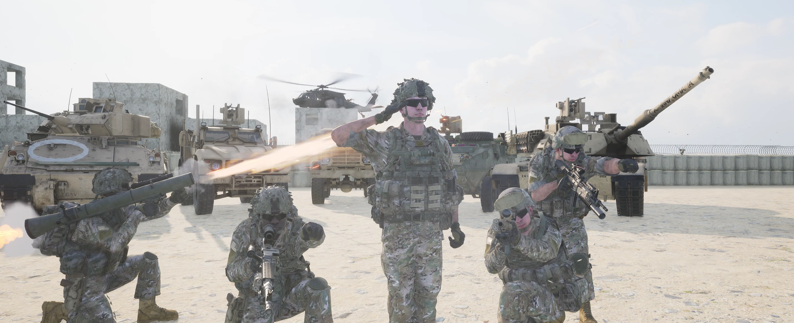

Wer sind wir ?
Salut, Kameraden!
Die 3. Jägerkompanie lädt euch herzlich ein, Teil unserer Squad-Community zu werden. Wir sind eine Truppe von engagierten Mitgliedern, größtenteils bestehend aus aktiven oder ehemaligen Soldaten, die ihre Leidenschaft für taktisches Vorgehen und die authentische Darstellung militärischer Operationen in Squad teilen.
Unsere Gemeinschaft basiert auf gegenseitigem Respekt, Teamwork und dem Streben nach einer realitätsnahen Spielerfahrung. In den Reihen der 3. Jägerkompanie findest du erfahrene Veteranen, die ihre Kenntnisse aus realen Einsätzen in das Spiel einbringen. Hier profitieren wir alle voneinander, sei es durch taktische Ratschläge, strategische Planung oder einfach den Austausch von Anekdoten aus dem Dienst. Unser Ziel ist es, gemeinsam eine großartige Zeit in Squad zu verbringen. Wir schätzen die Bedeutung von Zusammenhalt und Spaß am Spiel, und wir sind davon überzeugt, dass die besten Erfahrungen im Team gemacht werden. Unabhängig von deinem spielerischen Erfahrungsstand oder deiner militärischen Hintergrundgeschichte, bist du bei uns herzlich willkommen. Bist du bereit, dich uns anzuschließen? Tauche ein in die Welt der taktischen Herausforderungen, erlebe die Freude des gemeinsamen Sieges und werde Teil einer Community, die nicht nur miteinander spielt, sondern auch füreinander da ist. Schließ dich heute der 3. Jägerkompanie an und mach Squad zu mehr als nur einem Spiel - mach es zu einem authentischen Erlebnis.
1. Navigiere zur Schaltfläche "Discord" auf der offiziellen Webseite der 3. Jägerkompanie 261.
2. Klicke auf den "Discord"-Button, um auf den Discord-Server der 3. Jägerkompanie 261 zu gelangen.
3. Auf dem Discord-Server angekommen, suche nach dem Sprachchannel "Kreiswehrersatzamt".
4.. Falls ein Offizier online ist:
- Betrete den entsprechenden Channel und äußere dort deine Bewerbungsmotivation
- Starte ein erstes Gespräch mit einem der Offiziere
5. Sollte kein Offizier online sein:
- Gehe in den Textkanal "Kreiswehrersatzamt".
- Hinterlasse dort kurz deinen Namen, damit die Offiziere dich später kontaktieren können.
6. Unsere Offiziere werden sich so bald wie möglich bei dir melden, um den Bewerbungsprozess weiterzuführen.
Horrido und vielen Dank für dein Interesse an der 3. Jägerkompanie 261!